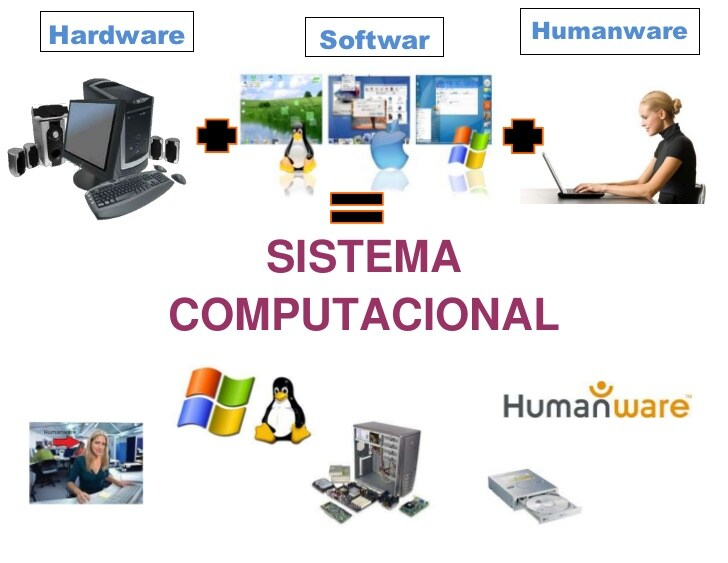
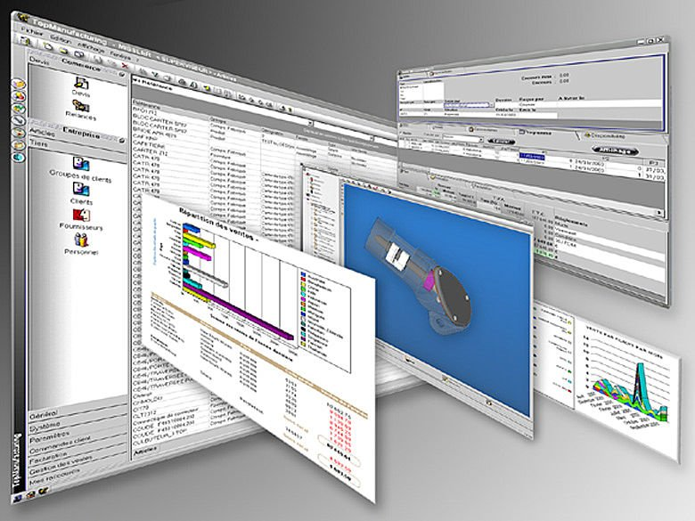

Elementos de un Sistema de Computacional
Equipo Computacional
hardware necesario para que el sistema de informacion funcione,
integrado por computadoras y equipo periferico conectados
a ellas

Recurso humano
son las personas que interactuan con el sistema de informacion
suministran datos o utilizan el sistema para generar datos
Fuente
son los datos e informacion que se introducen en el sistema , el decir
son entradas requeridas para el sistema informatico funcione

Programas
software ejecutado por la computadora, la cual procesa la
informacion de entrada para generar los resultados esperados
Telecomunicaciones
abarca el software y hardware que permite la transmision
en forma electronica de texto e imagenes, entre otros.

Politicas y Reglas de Operaciones
aplicadas a los procedimientos y mecanismos para hacer que una aplicacion
de computadora trabaje de acuerdo con estas o regir la parte funcional del
proceso administrativo de la empresa